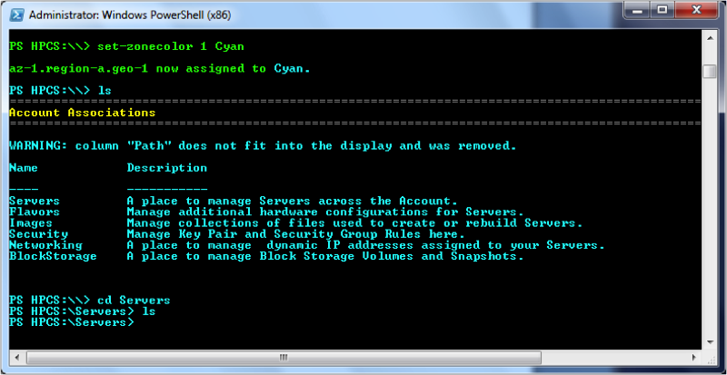

HP Helion Public Cloud CLI Software for Windows PowerShell Compute Examples
This page provides you some examples of how to use the various commands (sometimes called "cmdlets") for HP Helion Public Cloud CLI software for Windows PowerShell implementation of Compute.
- Navigation
- Availability Zone Color Management
- Key Management
- Security Groups
- Basic Server Operations
- Advanced Server Operations
- Password Management
- Floating IP Management
For complete details on the commands--syntax, descriptions, and so forth--take a look at the CLI Reference page.
Navigation
To execute commands in Windows PowerShell, first open a Windows PowerShell window; under the Start menu, it is typically under All Programs > Accessories > Windows PowerShell. Select the shell appropriate to your system, either the 64-bit or 32-bit version. Enter the HP Helion Public Cloud Services CLI by entering:
PS C:\> cd HPCS:
Once in the HPCS area, you can move around as if you were in a standard directory structure. For example, entering the ls command:
PS HPCS:\> ls
Generates the following output:
===============================================================
Account Associations
===============================================================
Name Description
____ __________
Servers A place to manage Servers across the Account.
Flavors Manage additional hardware configurations for Servers.
Images Manage collections of files used to create or rebuild Servers.
Security Manage Key Pair and Security Group Rules here.
Networking A Place to manage dynamic IP addresses assigned to your Servers.
To view objects in each area, just cd to the appropriate location and run the command. For example, if you want to view security objects:
PS HPCS:\\> cd Security
An ls command shows further nested objects available.
PS HPCS:\Security> ls
==========================================================================================================
Security Associations
==========================================================================================================
Name Description
---- -----------
SecurityGroups Container objects used for security group rules
KeyPairs A place to manage public/private keys used to create secure connections to compute instances.
Note: When referencing an argument, like a container name, that has a space, use quotes to access that resource. For example:
PS: HPCS:\> cd "my container:"
PS: HPCS:\> new-container "my new container"
Availability Zone Color Management
Each availability zone is assigned a color to make it easier for you to recognize which zone you are in. For example, if availability zone 1 is assigned cyan, whenever you are in that zone, all the command-line text is cyan. To see what colors are assigned to each zone, use the get-zones command:
PS HPCS:\\> get-zones
Current Availability Zones include
Zone Id Name Shell Foreground Color Is Default
------- ---- ---------------------- ----------
1 az-1.region-a.geo-1 Green True
2 az-2.region-a.geo-1 White False
3 az-3.region-a.geo-1 Cyan False
4 az-1.region-b.geo-1 Magenta False
5 az-2.region-b.geo-1 Yellow False
PS HPCS:\\>
To assign a new color to a particular availability zone, use the set-zonecolor command.
PS HPCS:\\> set-zonecolor 1 Cyan
az-1.region-a.geo-1 now assigned to Cyan.
PS HPCS:\\>
Use the Zone Id value rather than the zone name to set the color.
Note: The input to the command is case-sensitive; you must use an initial capital letter for the color name. For example, Cyan rather than cyan
After you change the zone color, when you navigate to the zone you see something similar to that shown below:

Key Mangement
To create a new keypair:
PS HPCS:\\> New-keypair "MyKey"
Created keys are stored in C:\Users\*username*\Documents\HP directory by default. A single key-pair can used to create multiple servers.
Note: When you generate a private key, be sure to make a note of the keypair as this is the only time it is displayed. Be sure to store your private keys in a safe location in order to allow ssh connections to that server.
To list keypairs, browse to the KeyPairs directory and perform the ls command:
PS HPCS:\\> cd Security
PS HPCS:\Security> cd KeyPairs
PS HPCS:\Security\KeyPairs> ls
To remove an existing keypair:
PS HPCS:\\> Remove-keypair "MyKey"
Security Groups
To list the currently-available security groups:
PS HPCS:\\> cd Security
PS HPCS:\Security> cd SecurityGroups
PS HPCS:\Security\SecurityGroups> ls
This command generates output that looks like:
============================================
The following SecurityGroups are available.
============================================
Id Name Description
-- ---- -----------
111 default default
1 SecurityGroup(s) found
To list the rules of a security group, using the default security group, first list the available security groups as shown above.
PS HPCS:\\> cd Security
PS HPCS:\Security> cd SecurityGroups
PS HPCS:\Security\SecurityGroups> cd 111
PS HPCS:\Security\SecurityGroups\111> ls
To create a new security group, where -n is the name of the security group and -d is the description for the security group:
PS HPCS:\\> New-SecurityGroup -n "TestGroup" -d "Test Security Group"
To create a new security group rule and assign it to an existing security group:
PS HPCS:\\> Add-Rule -fp "80" -tp "84" -ipp "tcp" -ipr "15.185.118.75/0" -gid "2133"
Note: You have to use the security group ID, rather than the security group name (as set in the previous example). To determine the security group ID, use the ls command on the SecurityGroups directory.
Note for Windows Images: A security group requires port 3389 to connect to a Windows instance via the remote desktop protocol (RDP). Windows CLI automatically creates security group rdp_group with port 3389 open when it detects a Windows image type during creation, and automatically applies the rdp_group security group to that Windows instance. Security Group rdp_group is always added as a security group to Windows instances even when you specify other security groups as arguments with the New-Server cmdlet.
For a full description of the options available with the Add-Rule command, please see the Add-Rule section of the Windows CLI Reference page.
To delete an existing security group rule:
PS HPCS:\\> Remove-SecurityGroup -id "3244"
Basic Server Operations
To create a new server:
PS HPCS:\\> New-Server -n "TestServer" -i "2111" -f "100" -sg "Security_group1" -md "Namevalue1 | value1" -k "KeyName"
Where the new server has name TestSever, image identifier 2111, flavor identifier100, security group name Security_group1, name-value pair Namevalue1 | value1, and keypair KeyName.
Note for Windows Images: When the Windows CLI detects you are creating a Windows server, it looks for the keypair .pem file in a specific location. The default location for the .pem file is C:\Users\*username*\Documents\HP. When the new-server operation has completed, the output is the Administrator password to be used with an RDP client. Please make note of it.
For a full description of the options available with the New-Server command, please see the New-Server section of the Windows CLI Reference page.
To list the currently-available servers:
PS HPCS:\\> cd Servers
PS HPCS:\Servers> ls
To update the name of an existing server:
PS HPCS:\\> Update-Server -id "2133" -n "NewName"
Note: You have to use the server ID, rather than the server name.
To reboot a server:
PS HPCS:\\> Reboot-Server "4516" "SOFT"
Note: A soft reboot signals the operating system to restart, which allows for a graceful shutdown of all processes. A hard reboot is the equivalent of cycling power on the server.
To delete an existing server:
PS HPCS:\\> Remove-Server "4516"
Note: You have to use the server ID, rather than the server name. To determine the server ID, use the ls command as shown above.
Advanced Server Operations
Create an Image of a Server
To create an image from an existing server:
PS HPCS:\\> new-image -s 125881 -n "Image01"
Where -s designates the server ID, and -n designates the image name. Use the ls command in the Images directory to view your created images.
Creating an image of an active server produces a state 'snapshot' of the server and makes it available as an Image. After creation you can use that image to create a new server. You can find the new image id by viewing the Images directory.
Note for Windows Images: For instances created from snapshots of Windows images, the Administrator password matches the Administrator password of the server the snapshot was taken from, even if you changed it from the original password.
Quick-Connect to an Instance
To perform a quick-connect to an existing server instance:
Note: In order for the connect-server command to work, your keypair .pem file needs to be in the appropriate location. The default location is C:\Users\*username*\Documents\HP.
PS HPCS:\\> Connect-Server 2111
This connects you to the server with the ID 2111. You can also connect to a server by navigating to a server directory and entering the Connect-Server command with no arguments:
PS HPCS:\\> cd Servers
PS HPCS:\Servers> cd 2111
PS HPCS:\Servers\2111> Connect-Server
Quick-Connect to a Non-Windows Instance
To connect to a non-Windows instance, such as Linux, follow these steps:
- Download the latest version of putty.exe and puttygen.exe for Windows.
- Make note of the location of your putty.exe and puttygen.exe files downloaded in step 1.
- Open puttygen.exe and load the .pem key file used to create the non-windows instance. This file is located at
C:\Users\*user_name*\Documents\HP. - Convert the .pem file to the .ppk format by selecting the Save Private Key action.
- Save the .ppk file into the same directory as your orginal .pem file and give it the same name.
- Launch the SSH session with the
Connect-Servercmdlet. Example:connect-server 12345where 12345 is your instance ID.
Note: If this is the first time to use connect-server with a non-windows instance, the system will prompt for the location of your putty.exe file. Please provide the fully qualified UNC path. For example: C:\Users\*user_name*\Downloads\putty.exe. This location is stored in your config file located at C:\Users\*user_name*\Documents\HP\CLI.config.
Note: If you use the same keypair name for another instance, you do not need to convert the key from .pem to .ppk again.
Password Management
Get-Password
To retrieve your password for your Windows instance:
Note: This cmdlet is currently available for Windows instances only.
PS C:\Program Files (x86)\HP\HPCS-Powershell> cd HPCS:
PS HPCS:\> Get-Password -s 123456 -k "key_1"
Log detected!
Administrator Password : [+&/}4CF6EJi
This retrieves the password for server ID 12345 that was created with keypair name key_1.
Note: The WinCLI looks for the keypair .pem file in a specific location. The default location for the .pem file is C:\Users\*username*\Documents\HP.
To use the Get-Password command, all of the following must be true:
- The server must appear in the server list
- The listing of the EventLog for the server (
PS HPCS:\Servers\server_id\EventLog), must display the encrypted key - The server has never rebooted after initial creation.
Reset-Password
For Windows Instances only, if you change your Windows password manually via RDP, you need to manually sync the password with the Windows CLI with the Reset-Password cmdlet for the connect-server command to work. If you use the get-password cmdlet to fetch your original de-crypted Administrator password, and it's available, it will overwrite the password sync.
PS HPCS:\> reset-password -id 1234 -p "Thisisalongpassword!"
This resets the password for server 1234 to Thisisalongpassword!.
Floating IP Management
Requests a new Floating IP and adds to your IP pool for assignment availability to a server:
PS HPCS:\\> Allocate-IP
Performing an ls command on the Networking directory shows your allocated IPs.
PS HPCS:\Networking> ls
============================================================
The following Networking are available.
============================================================
Id Instance Id Fixed IP IP
-- ----------- -------- --
1391 None None 15.184.120.110
1 Networking(s) found
To assign an allocated IP address to an existing server:
PS HPCS:\\> Assign-IP -s 2344 -ip "192.168.110.45"
To unassign an IP address for a particular server:
PS HPCS:\\> Unassign-IP -s 2344 -ip "192.168.110.45"
To de-allocate (release) a previously-allocated IP address out of your IP pool
PS HPCS:\\> Deallocate-IP -ip 1391
Where -ip represents the ID of the allocated IP address.
For a complete list of all the available Compute commands, please see the CLI reference page and Getting Help.